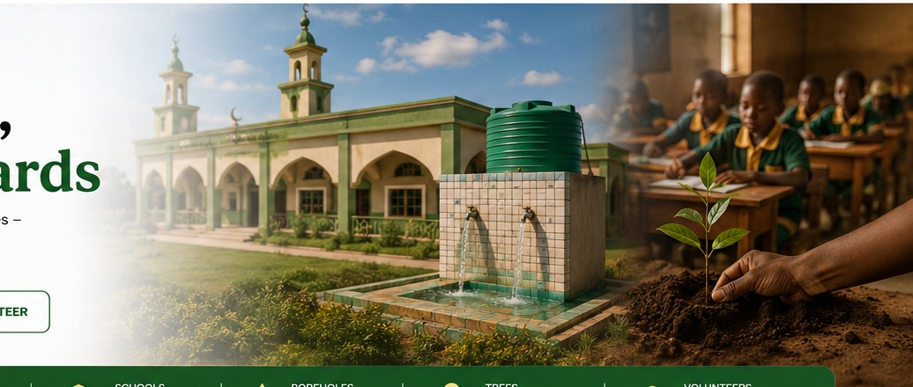
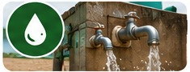
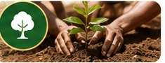
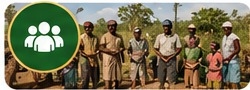

Mosque Development
Building and renovating mosques to provide places of worship, learning and community growth.
Learn More →
We build, we educate, we give water, we plant trees — so that communities thrive and rewards continue for generations.
Sustainable projects that create lasting impact and continuous rewards.
Building and renovating mosques to provide places of worship, learning and community growth.
Learn More →Supporting school development, learning resources and opportunities for children and youth.
Learn More →
Providing clean and safe water through boreholes and water access initiatives for communities.
Learn More →
Promoting environmental sustainability through tree planting and green community programs.
Learn More →
Implementing projects that empower communities and improve livelihoods.
Learn More →Your donations go directly to impactful projects.
We are committed to openness and accountability.
We work with communities for sustainable change.
Projects that keep giving rewards forever.
We are a charitable and community-focused organization committed to building a better tomorrow through sustainable projects in education, mosque development, clean water, tree planting and community welfare.
Learn More →Donate today and be part of a legacy of continuous charity.
Stay connected with Habsco Sadaqah Jariyyah Development Trust on social media.